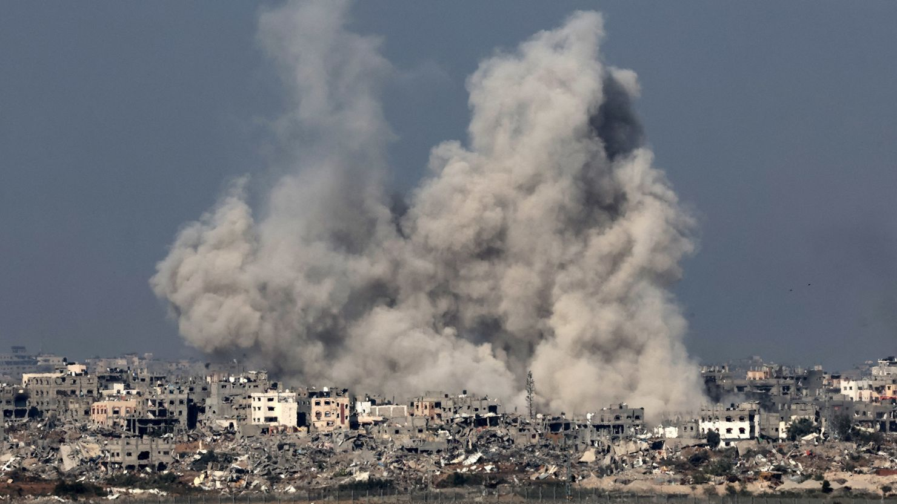

Kenya mourns the passing of Raila Odinga, a key figure in African politics and democratic reform. He died in India on October 15, 2025, following cardiac arrest during treatment.
Thousands gathered in Bondo, Kisumu, and Kibera to honor his legacy. Streets filled with green leaves and songs of remembrance echoed across the nation.
🗣️ From Critic to Champion: Atwoli’s Endorsement of Ruto
In a dramatic shift, COTU Secretary General Francis Atwoli has endorsed President William Ruto for a full 10-year leadership term. Once a fierce critic, Atwoli now praises Ruto’s work ethic, strategic governance, and ability to unify Kenya’s political landscape.
He cited Ruto’s commitment to economic reforms and grassroots engagement as key reasons for his support. The endorsement has sparked debate across political circles and may influence future electoral dynamics.
October 17, 2025
🌏 Asia: China–Taiwan Tensions
Taiwan’s Ministry of National Defense reported over 370 Chinese military aircraft and naval vessels operating near its airspace in October. One PLA aircraft crossed the median line of the Taiwan Strait, prompting Taiwan to deploy combat jets and missile systems.
🇺🇦 Ukraine–Russia War
Ukraine’s forces struck Russia’s Orenburg gas plant and Novokuybyshevsk oil refinery, causing major fires. Meanwhile tensions flared in Washington as leaders clashed over territorial concessions and diplomatic strategy.
🛡️ Russia–NATO Escalation
NATO aircraft conducted surveillance missions near Russia’s border in response to recent airspace violations. Regional militaries increased readiness amid heightened rhetoric.
🇷🇺 Russia–Ukraine: Strategic Bombing Explained
Russia’s upgraded S-500 and Iskander-M systems
Russia continues its aerial assault on Ukraine despite NATO support, targeting infrastructure and energy nodes. The conflict has reshaped regional diplomacy and military planning.
🇰🇪 Raila Odinga: Kenya’s Final Goodbye
State funeral held in Bondo with military honors
Kenya bid farewell to Rt. Hon. Raila Odinga in a state ceremony attended by thousands. Leaders from across Africa paid tribute to his legacy of democracy and reform.
🎬 Trending Movie: The Last Horizon
Haunting sci-fi drama exploring humanity’s final mission
October’s most anticipated release, The Last Horizon, blends stunning visuals with emotional depth. Streaming now across major platforms.
Middle East — Focus
Gaza War: Why Israel Bombed Gaza

Gaza under bombardment by Israeli airstrikes
On October 7, 2023, Hamas launched a surprise cross-border attack, killing over 1,200 Israelis and taking hostages. Israel responded with airstrikes targeting Gaza’s infrastructure, claiming self-defense.
Gaza: Genocide Allegations and Global Response
International lawyers and UN rapporteurs have accused Israel of committing acts that may constitute genocide in Gaza. The debate over accountability continues.
Syria: Civil War and Foreign Influence
Syria’s civil war remains a complex battleground of regional and global powers with ongoing humanitarian crises.
Jordan: Border Tensions and Refugee Pressure
Jordan faces mounting pressure from refugees and border tensions that challenge its stability.
Iran: Nuclear Tensions and Proxy Wars
Iran’s enrichment program and regional proxy networks continue to shape Middle East geopolitics.
Lebanon: Hezbollah and Political Paralysis
Lebanon remains politically paralyzed with Hezbollah at the center of power and regional tensions rising.